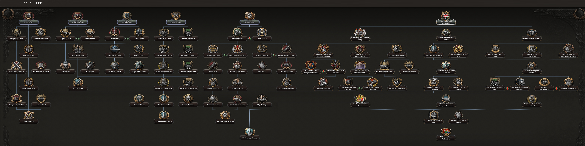
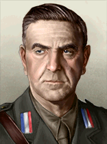
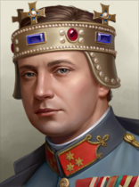
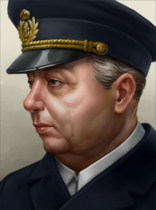

| 西欧 |
|
| 东欧 |
| 西欧 |
|
| 东欧 |
| 苏联 |
|
原页面：Independent State of Croatia
 克罗地亚独立国 or just
克罗地亚独立国 or just  克罗地亚 is a releasable state of
克罗地亚 is a releasable state of  南斯拉夫和
南斯拉夫和 意大利. When used with the Yugoslavia Fragmentation Status rule(which can be found in the custom game rules), it borders Slovenia to the northwest, Hungary to the northeast, Serbia to the east, Bosnia and Herzegovina and Montenegro to the southeast, and shares a maritime border with Italy to the west.
意大利. When used with the Yugoslavia Fragmentation Status rule(which can be found in the custom game rules), it borders Slovenia to the northwest, Hungary to the northeast, Serbia to the east, Bosnia and Herzegovina and Montenegro to the southeast, and shares a maritime border with Italy to the west.
In April 1941, Yugoslavia was occupied by Nazi Germany and Fascist Italy. Following the invasion, a German-Italian installed puppet state named the Independent State of Croatia (NDH) was established. Most of Croatia, Bosnia and Herzegovina, and the region of Syrmia were incorporated into this state. Parts of Dalmatia were annexed by Italy, Hungary annexed the northern Croatian regions of Baranja and Međimurje. The NDH regime was led by Ante Pavelić and ultranationalist Ustaše, a fringe movement in pre-war Croatia.
A resistance movement emerged. On 22 June 1941, the 1st Sisak Partisan Detachment was formed near Sisak, the first military unit formed by a resistance movement in occupied Europe.[82] That sparked the beginning of the Yugoslav Partisan movement, a communist, multi-ethnic anti-fascist resistance group led by Josip Broz Tito. In ethnic terms, Croats were the second-largest contributors to the Partisan movement after Serbs. In per capita terms, Croats contributed proportionately to their population within Yugoslavia.

 克罗地亚, lacking a unique national focus tree, uses the generic national focus tree instead. However, should
克罗地亚, lacking a unique national focus tree, uses the generic national focus tree instead. However, should  奥地利 completes the focuses
奥地利 completes the focuses  多瑙河联邦 or Demand Hungarian Submission or if
多瑙河联邦 or Demand Hungarian Submission or if  匈牙利 completes the focuses
匈牙利 completes the focuses  The Lands of the Crown of Saint Stephen or
The Lands of the Crown of Saint Stephen or  多瑙河联邦 as vassal, it gives Croatia a new branch.
多瑙河联邦 as vassal, it gives Croatia a new branch.
通用国策树有5个主要分支：
The Austro-Hungarian branch can be divided into 4 sections:
 克罗地亚 does not have any national spirit.
克罗地亚 does not have any national spirit.
 克罗地亚 starts with 2 research slots. As a releasable nation, when released it will inherit all technologies that the releasing nation had already researched.
克罗地亚 starts with 2 research slots. As a releasable nation, when released it will inherit all technologies that the releasing nation had already researched.
| 陆军科技 | 海军科技 | 空军科技 | 电子与工业 |
|---|---|---|---|
|
|||
| 学说 | |||
 克罗地亚 does not have any unique cosmetic names.
克罗地亚 does not have any unique cosmetic names.
 克罗地亚 controls 2 states when released either by Italy or Yugoslavia. It also has cores on Zara and Istria which Italy controls them.
克罗地亚 controls 2 states when released either by Italy or Yugoslavia. It also has cores on Zara and Istria which Italy controls them.
| 州 | 省份 | 地形（省份数） | 区域 |
|---|---|---|---|
| 克罗地亚 | 11 | Large Town | |
| 达尔马提亚 | 11 | Large Town | |
| 扎拉 | 1 | 飞地 | |
| 伊斯特拉 | 2 | Town |
| 州 | City | |
|---|---|---|
| 扎拉 | 扎拉 | 5 |
| 克罗地亚 | Zagreb | 3 |
| 达尔马提亚 | 拆分 | 3 |
| 达尔马提亚 | Dubrovnik | 3 |
| 伊斯特拉 | Fiume | 1 |
| 达尔马提亚 | Dubrovnik | 0 |
Croatia will be released as a Fascist nation that does not have elections upon release.
 克罗地亚 has the following political parties:
克罗地亚 has the following political parties:
| 意识形态 | 政党 | 支持率 | 党派领袖 | 国家名称 | 是否执政？ |
|---|---|---|---|---|---|
| 民主主义 | 15% | Vladko Maček | Republic of Croatia | No | |
| 共产主义 | 10% | 身份不明的领袖 | Socialist Republic of Croatia | No | |
| 法西斯主义 | 75% | Ante Pavelic | 克罗地亚独立国 | No | |
| 法西斯主义 | --- | Aimone, Duke of Aosta | 克罗地亚独立国 | No | |
| 法西斯主义 | --- | Nikola Mandic | 克罗地亚独立国 | No | |
| 中立主义 | 0% | Vladko Maček | Kingdom of Croatia | No | |
| 中立主义 | --- | Aimone, Duke of Aosta | Kingdom of Croatia | No | |
| 中立主义 | --- | 约瑟夫·弗朗西斯 | Kingdom of Croatia | No |
| 同上 | 肖像 | 名称 | 特质 | 效果 | 可用 |
|---|---|---|---|---|---|
| Vladko Macek | – | – | 起始领袖 | ||

|
身份不明的领袖 | – | – | 起始领袖 | |
 |
Ante Pavelic | Poglavnik | 起始领袖 | ||
| Nikola Mandic | – | – | Via special events | ||
| Prince Aimone | Tomislav II, King of Croatia |
|
|||
 |
Josef Franz von Habsburg | Ban of Croatia Slavonia |
|
Via the | |
| Vladko Macek | – | – | 起始领袖 | ||
| Prince Aimone | Tomislav II, King of Croatia |
|
 克罗地亚独立国 is prone to war by Italy via the Demand Dalmatia national decision. This can result in Dalmatia being ceded to Italy, should they accept their demands.
克罗地亚独立国 is prone to war by Italy via the Demand Dalmatia national decision. This can result in Dalmatia being ceded to Italy, should they accept their demands.
And it is also prone to war by Italy via the Send Ultimatum to Croatia national decision. This can result in Croatia being puppetted by Italy, should they accept their demands.
 克罗地亚独立国 is prone to Italian decisions via the Coronate Prince Aimone national decision. This can result in Croatia getting an event on accepting a king leader.
克罗地亚独立国 is prone to Italian decisions via the Coronate Prince Aimone national decision. This can result in Croatia getting an event on accepting a king leader.
However, it can be also puppetted by Italy via the Demand Tomislav's absolute reign national decision, granting 1 Infantry unit, a new leader and also admiral depending on Italy's ideology. Usually in the scenario, it is always the fascist leader that obtains it.
Ministers and military staff of  克罗地亚.
克罗地亚.
| 肖像 | 名称 | 特质 | 效果 | Requirments | ( |
|---|---|---|---|---|---|

|
Ivan Horvat | 共产主义革命者 |
|
150 | |
| Marko Antic | 民主改革者 |
|
150 | ||

|
Ante Bilic | 法西斯煽动家 |
|
150 | |
| Slavko Kovacic (R) | 神秘绅士 |
|
|
150 |
**Italic names indicate generic advisors.
| 肖像 | 名称 | 特质 | 效果 | Requirments | 花费 |
|---|---|---|---|---|---|
| Duro Jakcin | 海军机动（专家） |
|
– | 100 20 |
| 肖像 | 名称 | 特质 | 效果 | Requirments | 花费 |
|---|---|---|---|---|---|

|
Slavko Kvaternik | 陆军重整（专家） |
|
– | 100 20 |
| 肖像 | 名称 | 特质 | 要求 | |||||
|---|---|---|---|---|---|---|---|---|
| Ante Pavelić | 2 | 3 | 1 | 2 | 2 |
| ||

|
Slavko Kvaternik | 3 | 4 | 2 | 2 | 3 | – |
| 肖像 | 名称 | 特质 | 要求 | |||||
|---|---|---|---|---|---|---|---|---|

|
Miroslav Friedrich Navratil | 2 | 1 | 2 | 2 | 2 | – |
| 肖像 | 名称 | MNV |
COR |
特质 | 要求 | |||
|---|---|---|---|---|---|---|---|---|
 |
Đuro Jakčin | 2 | 2 | 1 | 2 | 2 | – | |
| Prince Aimone | 2 | 2 | 2 | 2 | 2 | Italy has completed decision Demand Tomislav's absolute reign |
| 标志 | 名称 | 类型 | 效果 | 要求 | 花费（） |
|---|---|---|---|---|---|

|
工业连 | 工业财团 | – | 150 | |

|
电子连 | 电子学财团 |
|
– | 150 |
Design companies of  克罗地亚.
克罗地亚.
| 标志 | 名称 | 类型 | 效果 | 要求 | 花费（） |
|---|---|---|---|---|---|

|
装甲连 | 坦克设计商 |
选择此设计公司后，只要它仍在受雇，就会永久影响其受雇期间研究的所有装备的性能。 |
– | 150 |
| 标志 | 名称 | 类型 | 效果 | 要求 | 花费（） |
|---|---|---|---|---|---|

|
海军连 | 舰船设计商 |
|
– | 150 |
| 标志 | 名称 | 类型 | 效果 | 要求 | 花费（） |
|---|---|---|---|---|---|

|
轻型航空连 | 轻型飞机设计商 |
选择此设计公司后，只要它仍在受雇，就会永久影响其受雇期间研究的所有装备的性能。 |
– | 150 |

|
中型航空连 | 中型飞机设计商 |
选择此设计公司后，只要它仍在受雇，就会永久影响其受雇期间研究的所有装备的性能。 |
– | 150 |

|
重型航空连 | 重型飞机设计商 |
选择此设计公司后，只要它仍在受雇，就会永久影响其受雇期间研究的所有装备的性能。 |
– | 150 |

|
海军空军连 | 海军飞机设计商 |
选择此设计公司后，只要它仍在受雇，就会永久影响其受雇期间研究的所有装备的性能。 |
– | 150 |
| 标志 | 名称 | 类型 | 效果 | 要求 | 花费（） |
|---|---|---|---|---|---|

|
摩托化连 | 摩托化装备设计商 |
|
– | 150 |

|
轻武器公司 | 步兵装备设计商 |
|
– | 150 |

|
火炮连 | 火炮设计商 |
|
– | 150 |
 克罗地亚 have access to these 军事工业组织.
克罗地亚 have access to these 军事工业组织.
| ||||||||||||||||||||||||||||||||||||||||||||||||||||||||||||||
| ||||||||||||||||||||||||||||||||||||||||||||||||||||||||||
| ||||||||||||||||||||||||||||||||||||||||||||||||||||||||||||||||||
| ||||||||||||||||||||||||||||||||||||||||||||||||||||||||||||||||||||||||||||||||||||||||||||||||||||||||||||||||||||||||||||||||||||||||||||||||||||||||||||||||||||||||||||||||||||||||||||||||||||||||||||||||||
| 征兵法案 | 贸易法案 | 经济法令 |
|---|---|---|
|
|
|
年份 |
军用工厂 |
海军船坞 |
民用工厂 |
建筑槽位 |
|---|---|---|---|---|
| 1936 | 0 | 1 | 6 | 10 |
If released by Italy, Croatia gets 1 naval dockyard and 4 extra building slots
 克罗地亚 has no resources in its territory.
克罗地亚 has no resources in its territory.
Army of  克罗地亚独立国.
克罗地亚独立国.
| 师 | # Focus Release | # Decision Release | |
|---|---|---|---|
| Yugoslavian Defense Force | 4 | 0 | |
| Tomislav's Royal Guards | 0 | 1 | |
| 师总数 | 4 | 1 | |
| 已用人力 | 33.2k | 6k |
 克罗地亚独立国 has no army, but depending by focus release it starts with one template that spawns with either 2 or 4 militia units. But with dedicated focuses, it increases in more unique templates.
克罗地亚独立国 has no army, but depending by focus release it starts with one template that spawns with either 2 or 4 militia units. But with dedicated focuses, it increases in more unique templates.
Instead by Yugoslav focus release, and by Italian decision release as well, it gets one unique template by decision release.
As a releasable nation, when released it will inherit all templates that the releasing nation had already created.
| 师 | 名称列表 | 支援连 | 战斗营 |
|---|---|---|---|
| 步兵 | 8x Infantry | ||
| 步兵 | 6x Infantry, 2x Artillery | ||
| 步兵 | 6x Infantry |
| 类型 | |||||
|---|---|---|---|---|---|
| 运输船队 | 5 | ||||
| 舰船总数 | 0 | 0 | |||
| 已用人力 | 0k | 0k | |||
 克罗地亚独立国 没有海军。
克罗地亚独立国 没有海军。
 克罗地亚独立国 没有空军。
克罗地亚独立国 没有空军。
意大利 can release Independent State of Croatia as 傀儡国 while keeping Core states - since it just so happens what Independent State of Croatia has Core on Zara enclave. In that case, it's going to be limited to single enclave, without resources, without building slots, and spot for level 1 Naval Base. It won't have enough manpower to field even a single proper division. However, they can use 通用国策树 to buff their country and build up - so you could focus building up 意大利.
Better yet: release Independent State of Croatia as 傀儡国 while keeping Core states - annex it after 通用国策树 is complete (complete enough) - release 伦巴底-威尼西亚王国 as 傀儡国 while keeping Core states - annex it after 通用国策树 is complete (complete enough).
It's no secret that Croatia starts in a stuck position with no army, but given some smart moves and cheese you should be able to form a pretty formidable Croatia, given some time, effort, and luck. It comes with compensation of having 6 civilian factories and 1 naval factory.
Now, the first thing you should do is take the first Political focus, which will give you 120 political power, plus the 70 you have already accumulated. Go for the fascist tree to boost up the manpower generation and political power further. Yes, I know, staying fascist is the go-to strategy for basically every minor, but if it works, it works. While at it, take some industrial focuses to get some free factories. Grab the two free civilian factories first, then get the three military factories. Use your excess political power to get war economy, and if you have any extra left, get some Improved Worker Conditions or Anti-Communist/Democratic raids. Otherwise, if your manpower is still an issue you can go communist to get to the weekly manpower army experience.
By now you should have a total of 14 or 15 factories- 11 civilian and 3 military. One of your civilian factories will be used for consumer goods, so use the remaining one to either build some more civs or trade for some steel. Use one of your 3 military factories to produce artillery, and use the other 2 to build guns. Set some factories to build support equipment as well once you get some more mils.
At this point, you should've flipped fascist already, so start justifying on Bosnia. At the same time start working on the political focuses. Make a template of one cavalry unit, and spam it out. You should also have a fair amount of political power at this point, so take some stability-increasing decisions. Should you declare on Slovenia, Austria, or god forbid, Czechoslovakia, Hungary or Romania aand win against them each other gives you the decision to form the nation of Austria-Hungary and gain extra cores, manpower and a fairly decent industry. It won't make you a superpower yet, but it'll give you a viable chance to expand, and possibly take the entirety of Balkans and if lucky, Europe.
Oddly enough, Croatia is another country, albeit releasable, that can form Austria Hungary. Historically enough, it has been contested by Croatians. In the history of Austria-Hungary, trialism was the political movement that aimed to reorganize the bipartite Empire into a tripartite one, creating a Croatian state equal in status to Austria and Hungary. Franz Ferdinand promoted trialism before his assassination in 1914 to prevent the Empire from being ripped apart by Slavic dissent. Croatia, can be released manually by Italy without resorting only to "Yugoslavia Fragmentation Status" rule. Unfortunately, all the factories and industries(except naval dockyards) that Croatia has in all cores are owned by Yugoslavia. Thus, nothing can be initiated. And, there is further hostility as both nations have cores on Croatian lands.
First stop is to make industry researches, in order to kickstart the quest of becoming an empire. And begin research with interwar planes and researching paratroopers. Take the military factories and prepare making guns, and transport airplanes. Justify War on Austria and Dutch East Indies, and spawn 10 Paratroopers (with one brigade) once they are researched. And as for the fighters, best way is to research solely one machine gun, in order to rush down to production. Once partially done with the industry, take one focus for the Air force, for some changes and updates on planes, and to have a starting airbase for the invasion. In meantime invest the political power onto raising the conscription law and changing the economy to war economy as well as adding an army command.
Produce relatively 10 transport planes, and 1-3 fighters. Diplomatically wise, improve relations with Italy and Germany for a purpose to ask them for lend lease. Once the war justification in Austria is finished, declare war on them. And set the paratroopers to land in center of Austria and have the Austrian troops in disarray coming to supress the invading paratroopers. While at it, use 1 paratrooper to land on key cities like Vienna, Salzburg and rush to capture other key cities like Innsbruck to further their capitulation. Annex them on the spot, and join the Axis. This would make it easy to go closer to the Netherlands since the justification goal for the Dutch Indies is still going. Move the paratroopers and air force near their border. Once you declare war on the Dutch(without generating tensions), make sure to accept lend lease from Italy and Germany in terms of Transport planes and Fighters, even accepting some of their own domestic lease. The Dutch front will be as always with the same strategy as before. Land them in the centre, one paratrooper to capture the important city like one for Hague and one for Amsterdam, and slowly capitulate them. In this case, puppet them all, every Dutch domain and take resource rights, instead of annexing them.
Justify on Hungary, and utilize the East Indies manpower, as their amount can suffice enough to withstand a grand invading army. Hungary eventually will be guaranteed by France and Britain. And, inevitably they will gain superiority in the Austrian skies, so it is best advised to produce fighters instead of transport planes. In the meantime, set some troops to protect the coast as the allies will try to naval invade you. One for Istria and one for Zara. Whereas in the Hungarian front it is best to counterattack their troops and find the weakest link to encircle and make way to the capital. Once you capitulate the Hungarians, justify onto Czechoslovakia. Attack from the Slovakian front to make a significant push, and push all the way west to enter inside the Czechian soil, reaching Prague and with a big of fighting in the Sudetenland, capitulate them.
Next in line to justify will be Romania, Yugoslavia and Belgium. All of them will join the Allies, and for Belgium be sure to call the Dutch onto war in order to capitulate them quickly. Once reaching the French borders, call the Italians to make the invasions easier and disrupt the forces north and south. The Germans on the other hand will join by themselves, thus lifting the pressure for the French front opened in the north. France will capitulate, and let the Germans take care of the occupied lands. Yugoslavia and Romania are next but to drag them in, just declare war on Yugoslavia. And Romania will enter to aid them. In this case, all of the troops in the French campaign will have to be stationed in the Yugoslav and Romanian borders. Declare war on Yugoslavia, and both them and Romania will join the Allies. With Romania, the troops should be provided in a defensive manner, as the main goal is to take down Yugoslavia first and then Romania. Italy and Germany will certainly come in aid, but unlike in their case, the required lands must go into Croatian hands, including Vojvodina. Thus, Yugoslavia will grind their troops mainly with Croatia and time to time try to outmaneuver them directly from the Slovene and Croatian soil, prior entering to Vojvodina. Italy will flank them from the left, thus making it easier to encircle them if the Croatian troops are faster. Push from Bosnia and spearhead into Moravia and Montenegro. The Axis will try to attack Belgrade, so it is better to pin down some troops before they reinforce the defense. With Moravia and Serbia onto the Axis hands, be sure to clean every enemy troop that is inside Yugoslavia and that their lands pass onto Croatia.
With Yugoslavia out of the way, Romania is next. Unlike Yugoslavia, Romania doesnt require much to take, in order to form Austro Hungary. But it will require the player to fully capitulate them in order to form it safely. Push them away from Transylvania, until they are in Croatian hands and take the decision to form Austro-Hungary.
| 西欧 |
|
| 东欧 |
| 西欧 |
|
| 东欧 |
| 苏联 |
|